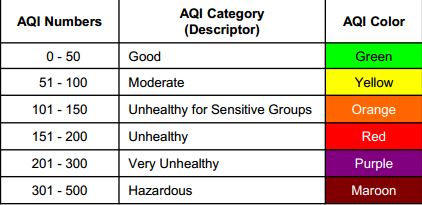

Welcome to the AQI monitor! Use this web application to track the concentration of PM2.5 particles and other gases in the atmosphere of your local neighborhood or around the US.
Just type in the zipcode of the location of where you would like to see current readings and view the map.
The color of the marker on the map represents the health and quality of the air.
This is a publicly available application! Simply copy and paste the code onto your website in order to share this information.
If you feel at all worried about the quality of your air, or the concentration of PM2.5 Particles in your atmosphere, don't hesitate to reach out! Every voice helps.